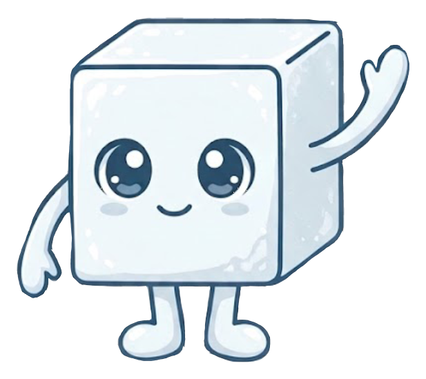
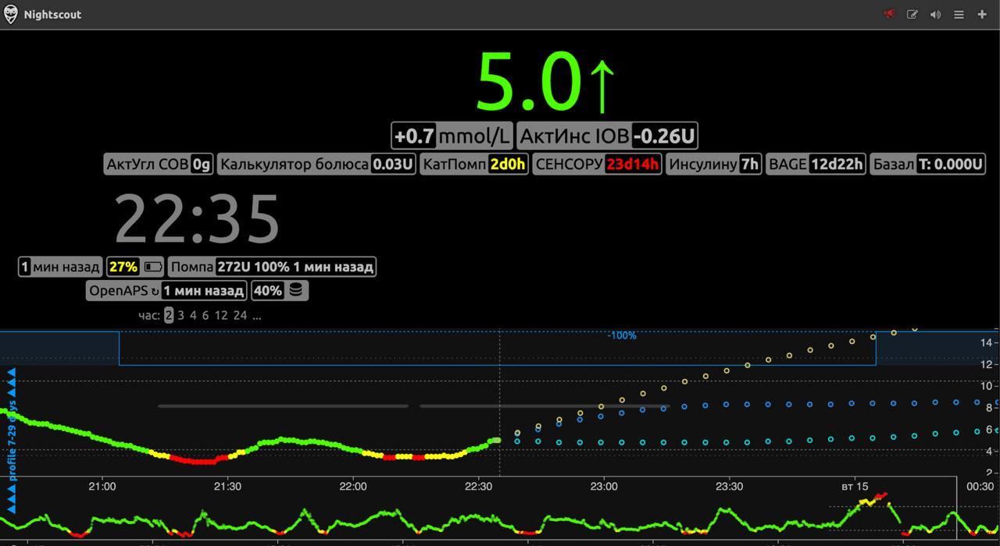
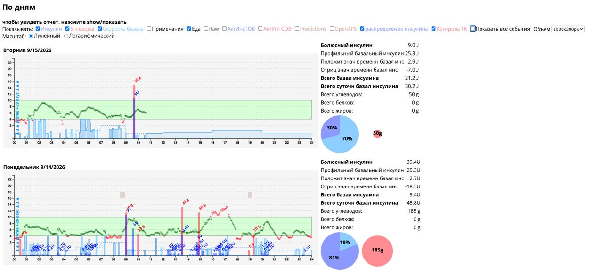
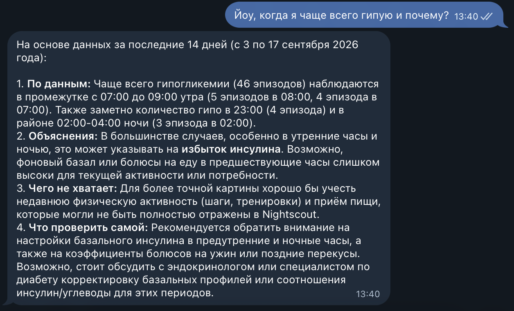

Ассистенты
Меньше держать день с диабетом в голове.
Ассистент в мессенджере собирает контекст дня и помогает понять, почему сахар ведёт себя так — без ещё одной простыни графиков.

Сахар есть. Сил разбирать день — не всегда.
«Раз в полгода на пару недель-месяц я могу подробно начать записывать… Но чтобы делать это каждый день в течение всей жизни, меня на это не хватает.»
— из разговоров с людьми с СД1
«Диабетик часто не понимает, что происходит [с сахаром]; я не исключение.»
— из разговоров с людьми с СД1
Эмоциональная нагрузка из‑за диабета знакома очень многим — до 80% в исследованиях диабетического дистресса (EASD).
Сахар и инсулин на графиках — есть. Смысла дня — нет.
Петли, помпы и приложения уже показывают сложные кривые. На них видны очевидные вылеты. Но без контекста дня непонятно, почему так вышло.
- Есть: глюкоза, инсулин, иногда углеводы — плотные графики и отчёты.
- Есть: очевидные пики и провалы, которые и так бросаются в глаза.
- Нет: контекст дня целиком — сон, стресс, цикл, нагрузка, «что ела и когда» — в одном месте со смыслом.
Ассистент как раз про слой посередине: не ещё один график, а трактовка — связать данные с тем, что происходило в жизни.
От «просто кривая» — к ответу в чате.



Силы, которые уходили на менеджмент, — обратно в жизнь.
Не «ещё один отчёт», а короткий разбор: что в дне могло повлиять и на что обратить внимание.
Что делает и чего не делает.
Делает
- Держит контекст дня (события, нагрузка, цикл и др.)
- Связывает его с глюкозой и помогает увидеть паттерны
- Отвечает на естественном языке в мессенджере
Не делает
- Не заменяет врача
- Не рекомендует дозы инсулина
- Не управляет помпой и петлёй
Сейчас — для взрослых с СД1.
Если у вас уже есть сенсор / мониторинг глюкозы и привычка жить в мессенджере — это как раз тот формат.
Дальше та же идея может пойти на другие хронические состояния, где важен дневной самоменеджмент (например астма, мигрень, аллергии). Сейчас фокус — диабет 1 типа.
Давай поговорим.
Делаю проект сама (живу с СД1 ~20 лет), рядом — консультанты по медицине и IT. Сейчас пилот; внешняя бета — следующий шаг.
- Telegram: @KaterinaaRomanova
- Телефон: +7 931 962-92-02
Wellness-ассистент: не ставит диагнозы, не рекомендует дозы и не управляет помпой. Медицинские решения — за вами и врачом.